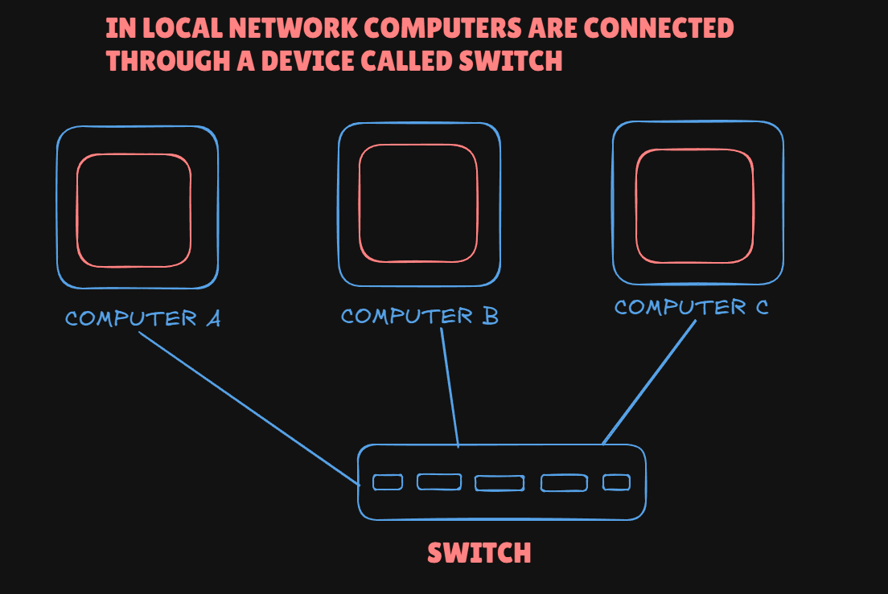
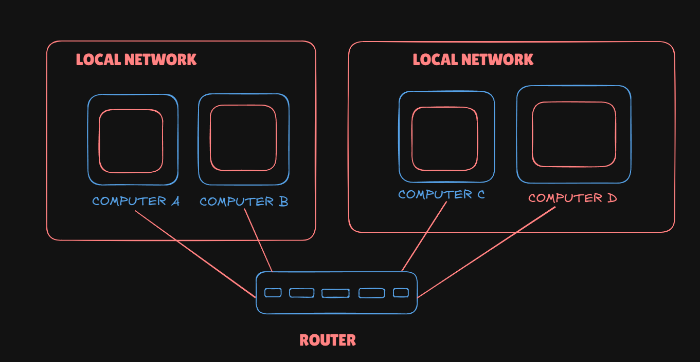
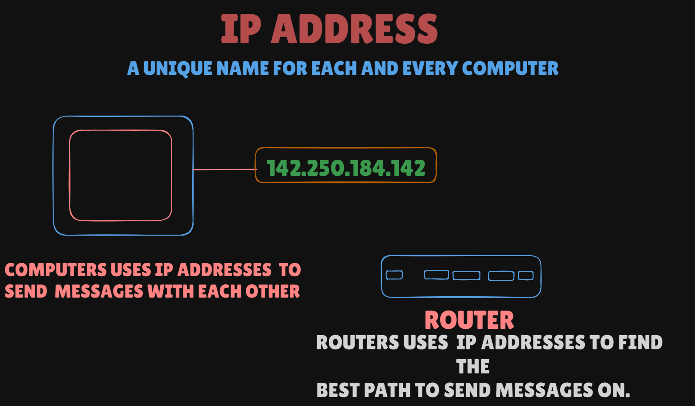
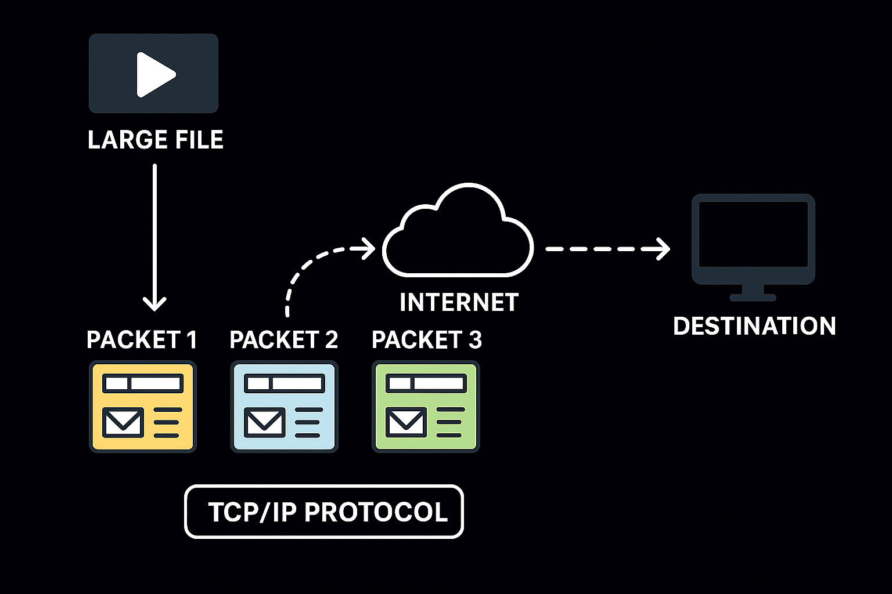

..............................................................................
- 1969 – First Internet Message The very first message was sent on a network called ARPANET (the early version of the internet). It was between two computers at UCLA and Stanford. The message was supposed to say “LOGIN”, but the system crashed after just “LO”.
- Ray Tomlinson sent the first-ever email. He also came up with the idea of using the “@” symbol to separate the username from the computer name (like we still use today in email addresses).
- Tim Berners-Lee, a scientist at CERN, invented the World Wide Web. He made the first web browser the first web server and also created HTML (the language used to make websites). This is what made browsing websites possible
- Google was started in 1998. It completely changed how people search for information on the internet making it much faster and easier
- HOW DOES THE INTERNET WORKS ?
-
To share information between two computers the simplest way is carrying data physically (like with a USB) but will be slow. A better way is to connect them directly with a cable (ethernet or fiber). By sending signals as 1s and 0s the computers can communicate — this is the most basic form of a network.

- If many computers all connect directly to each other too many cables are needed — it doesn’t work.
The solution is a Switch: every computer connects to the switch and the switch sends the message to the right computer.
This makes a Local Network (LAN) where nearby computers (like in an office or home) can easily share information.
 - The internet works by connecting many smaller networks together. Each office or home has its own local network but instead of wiring every computer to every other network we use a special device called a Router. A router links one network to another and passes messages between them. By connecting routers to other routers we create a huge web of connected networks — this is what we call the Internet: a network of networks.
 - The internet connects millions of computers worldwide. To make sure a message reaches the right computer each device needs a unique address just like every house has its own street address.
This address is called an IP Address (for example, 142.250.184.142).
When you send something your computer attaches the destination IP Address. Routers along the way look at the address and decide the best next step (hop) to move the message closer to its target.
Routers don’t know the full journey but step by step the message travels until it arrives at the correct computer.
In short: IP addresses are like house numbers and routers act like postmen passing your letter along the best route.
 - When sending big files, like a video, the data is broken into small pieces called packets.
Each packet has:
A chunk of the data,
The sender’s and receiver’s IP addresses,
A number to keep the order.
Packets can take different routes across the internet. At the destination the computer collects them, puts them back in the right order, and asks for any missing ones again.
This method is reliable and efficient, and it works using the TCP/IP protocol.

BACK TO THE MAIN PAGE |